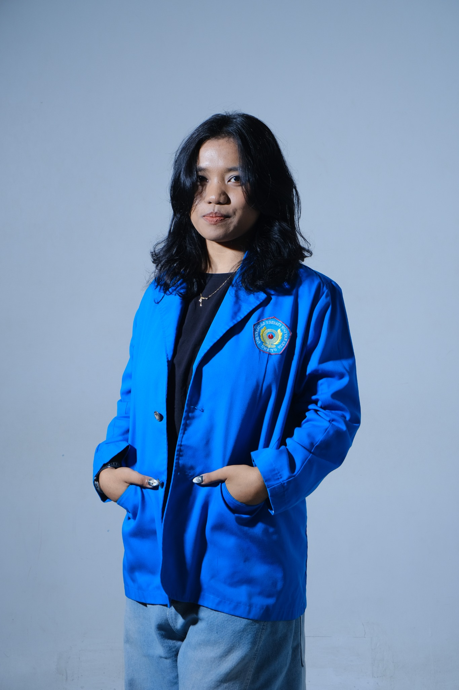

Sistem Informasi Bank Sampah
Sistem berbasis web untuk membantu pengelolaan nasabah, jenis sampah, setoran, penarikan, transaksi, laporan, autentikasi, dan validasi.
Saya merupakan lulusan S1 Informatika yang memiliki ketertarikan pada pengembangan web, sistem informasi, jaringan komputer, dan teknologi informasi. Saya senang mempelajari hal baru dan menerapkannya melalui berbagai proyek.

Beberapa proyek yang saya kerjakan untuk menerapkan pengetahuan dan mengembangkan kemampuan di bidang teknologi.
Sistem berbasis web untuk membantu pengelolaan nasabah, jenis sampah, setoran, penarikan, transaksi, laporan, autentikasi, dan validasi.

Website profil sekolah yang memuat informasi sekolah, visi dan misi, sejarah, struktur organisasi, fasilitas, galeri, PPDB, serta kontak.

Aplikasi chat yang mencakup registrasi, autentikasi, pengiriman pesan, upload file, dan integrasi database.

Aplikasi web berbasis Flask yang menerima input suara melalui mikrofon dan mengubahnya menjadi teks menggunakan layanan speech recognition.

Aplikasi terdesentralisasi yang mengeksplorasi proses listing dan penyewaan properti melalui antarmuka web dan smart contract Solidity.

Website yang dikembangkan dan dipublikasikan melalui GitHub Pages. Versi live dan repository tersedia untuk melihat hasil proyek.

Website yang dikembangkan dan dipublikasikan melalui GitHub Pages. Versi live dan repository tersedia untuk melihat hasil proyek.